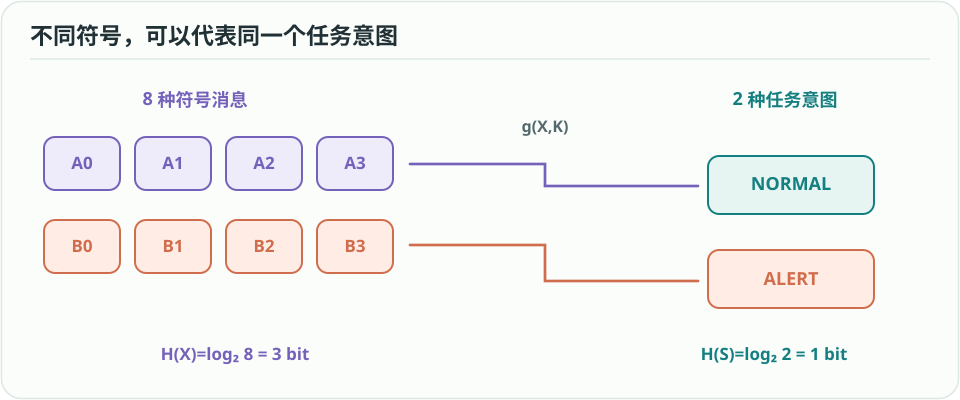
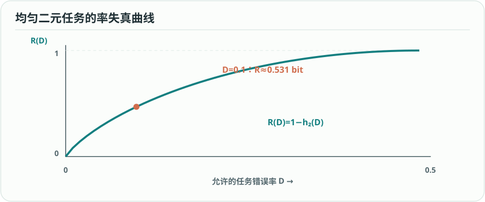
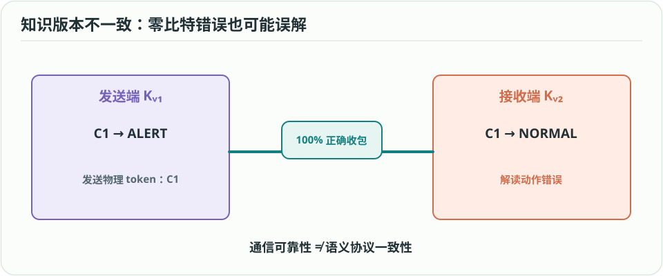
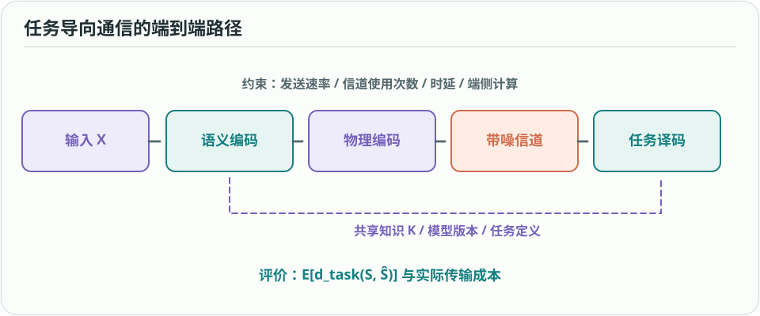

同一句意思，为什么不必传同样的字节？
把“前方禁止通行”和“道路已封闭，请绕行”视作两条消息时，它们在字节、文字长度与语法上不同；但如果接收端只需决定“继续前进还是绕行”，两条消息可能触发同一个动作。信息论最值得追问的不是“少发多少字符”，而是：我们究竟要求接收端重现什么？
Shannon 的 1948 年通信模型刻意将语义从当时的工程问题中抽离，却并未主张消息永远不能按语义处理。只要任务、损失函数和数据分布可精确定义，经典的熵、互信息与率失真工具本身仍然适用；较新的语义通信研究还会引入知识库、生成式接收机与任务相关度量。不同论文对“语义熵”“语义容量”有不同定义，不能把其中一种当作普适定理。

从符号 X 到语义 S：必须明确映射
先定义离散消息 X、共享或接收端已知的上下文 K，以及随任务给定的语义映射 S=g(X,K)。这里的 S 不必是一段“神奇的向量”；它可以是告警类别、意图编号、控制决策、要检索的事实集合，甚至是具体业务任务的正确答案。若 S 完全由 X 和 K 决定，则：
证明仅需链式法则：H(X,S|K)=H(X|K)+H(S|X,K)=H(S|K)+H(X|S,K)，而确定性语义映射给出 H(S|X,K)=0。因此差值为 H(X|S,K)≥0。被“压掉”的信息是任务映射丢弃的细节，并不是物理信道凭空获得了额外容量。
以八条等概率消息为例，符号熵为 log₂8=3 bit/消息。如果四条指向 NORMAL、四条指向 ALERT，那么任务变量的熵恰好为 1 bit/消息。这个差距不包含模型权重、同步、传输协议、端侧算力和错误保护等开销，不能直接宣传成某个真实通信系统“节约 67% 带宽”。
语义熵不是一个统一的现成公式
对于已经定义好的离散语义变量 S，H(S|K) 是严格的 Shannon 条件熵，具有明确的操作意义。另一类论文会用同义词等价类、逻辑命题真值、语义嵌入分布或基于任务的损失，分别建立自己的“语义熵”或“语义率”定义。这些量需要逐一检查空间、基准测度、编码模型及是否有编码定理，不能直接相互比较。
−log₂(similarity)，不自动构成熵：相似度不是归一化事件概率，结果可能因嵌入模型、文本长度甚至负相似度而失去信息论含义。语义变量还可能依赖上下文。发送端认为“OK”代表任务完成，但接收端的知识 K 不同，可能理解成“收到但未完成”；这不是简单的物理信道比特错误，而是语义协议不一致。可验证的模型应明确：谁持有 K、如何版本化、何时更新、如何处理分布外输入。
把“理解正确”写成任务失真函数
如果 S 是二分类任务的真实类别，接收端输出 Ŝ，最朴素的语义失真是零一损失 d(S,Ŝ)=𝟙[S≠Ŝ]。给定真实类别分布，任务率失真函数就是满足允许平均决策错误率 D 时，所需最少互信息：
在 S 为等概独立 Bernoulli(1/2)、失真是 Hamming 距离的特例中，经典闭式结果为：

二元均匀 i.i.d. 任务、Hamming 失真与渐近块长；实际无线传输仍需另行考虑信道编码、时延、元数据和有限块长。
对于医疗报警，漏报和误报代价通常不相等，可以定义代价矩阵 d(s,ŝ) 而不是简单 0–1 损失；对于图像描述可使用检索成功率、目标检测、事实一致性或结构化任务效用。若指标改变，最优语义表示也会改变，未必存在一个“通用的最好语义压缩器”。
共享知识是压缩的条件，也是风险
接收端的推断依赖共享背景信息 K。如果两端知道道路状态分类、地图版本与指令集合，那么一句简短代码就可以触发复杂行为。但模型更新、符号表不一致或领域迁移会造成语义偏差；通信成功不能仅以物理比特错误率评判，也应检查任务损失、分布漂移、置信度与错误恢复策略。

有的系统把 K 编进固定基础模型权重，并把模型部署当作离线成本；有的系统则动态同步知识库。比较两种系统时，应对同步成本、算力/能耗、更新频率、知识泄漏风险与所需任务精度作同一口径的统计。
语义通信系统怎样进行端到端优化？
一种可操作的架构是：输入 X 经语义编码器提取任务相关的 T；物理信道编码器将 T 映射为满足功率约束的信号；接收机通过信道观测恢复 Ť，再解码得到动作 Ŝ。这与经典联合信源—信道编码并不矛盾，而是把优化目标从逐比特还原扩展为任务损失。

可把问题写成在信道与计算预算约束下最小化 E[d_task(S,Ŝ)]，并同时报告每任务样本所需信道使用次数、总发送比特、时延、端侧能耗以及错误发生时的后果。实际系统还要分别报告 bit-level 和 task-level 评价，不能只展示重建图像是否“看起来类似”。
ITU-R M.2160 确认 IMT-2030 六类使用场景，其中包含 AI and Communication；这不等于某一语义熵公式或生成式通信架构已被确定为统一 6G 协议。标准化场景与探索性研究应分别陈述。
大模型能帮忙，但困惑度不是语义理解
语言模型给出 token 的条件概率，可作为预测式信源编码器或接收端共享先验的一部分。在固定 tokenizer、相同测试语料及自然对数交叉熵条件下，perplexity 与平均负对数似然满足 PPL=exp(NLL_nats)；换算到 bit/token 则 bits/token = NLL_nats / ln 2。这是真实的概率编码联系，但低 PPL 不自动表示正确理解意图。
生成式语义接收机可能输出与原句不同但任务等价的结果，也可能“幻觉”出没有发送过的事实。若任务要求精确法律文本、密码学证据或医疗剂量，细节本身就是任务的重要部分；绝不能因为生成式结果流畅，就声称信息无损恢复。tokenizer 不同的 PPL 也不能直接当成同一 bit/字符指标。
研究结论的适用边界
- 必须先定义消息变量 X、上下文 K、语义/任务变量 S 与任务失真 d，否则“语义容量”缺乏可比较的操作定义。
- 语义等价类降低所需信息量，是因为任务允许丢弃细节；不能无条件替代原始文件的无损通信。
- 分享预训练模型可以降低在线消息率，但模型部署、同步和推理并非零成本。
- 把任务准确率、速率、时延、能耗、漂移鲁棒性与安全性放在同一张实验表中，而不是只报告主观语义相似度。
来源与延伸阅读
- C. E. Shannon (1948), A Mathematical Theory of Communication：经典通信问题的建模范围。
- Xin, Fan & Letaief (2024), Semantic Communication: A Survey of Its Theoretical Development：多种语义熵和语义率失真框架的分歧。
- Meaningful Goals: Toward a Semantic-Functional Rate Distortion Theory (2025)：以任务失真定义可达目标的研究。
- A Theory of Semantic Communication (2024)：语言设计与任务导向联合编码。
- ITU-R M.2160-0 (2023), IMT-2030 Framework：AIAC 是未来移动网络场景之一。
- C. E. Shannon (1959), Coding Theorems for a Discrete Source With a Fidelity Criterion：率失真定理的操作基础。